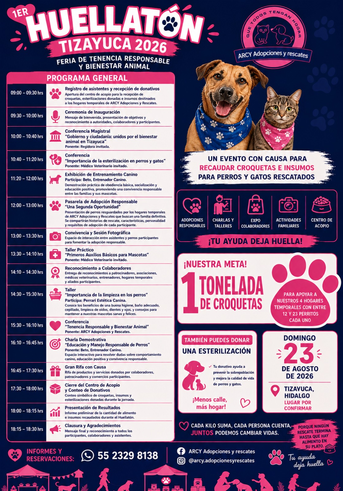

Charlas
Información para cuidar mejor.
Espacios de orientación sobre tenencia responsable, prevención del abandono y bienestar animal. Las fechas confirmadas se publicarán aquí.
Agenda ARCY
Consulta nuestros espacios de educación, recaudación, adopción y participación comunitaria.
Charlas
Espacios de orientación sobre tenencia responsable, prevención del abandono y bienestar animal. Las fechas confirmadas se publicarán aquí.
Bazares
Encuentros comunitarios para apoyar los gastos de rescate, alimentación y atención veterinaria. Próximas fechas por confirmar.
Campañas
Acciones para prevenir la sobrepoblación y proteger la salud de perros y gatos. La información se actualizará al confirmarse cada jornada.
Ferias de adopción
Jornadas de convivencia y adopción responsable con animales previamente evaluados. Próximas fechas por confirmar.
Evento destacado
Feria de Tenencia Responsable y Bienestar Animal
Faltan

Un evento familiar con causa
El Huellatón busca involucrar a la ciudadanía y fortalecer la cultura del bienestar animal mediante educación, convivencia y participación comunitaria.
Durante todo el evento
Itinerario
Programa organizado con base en el proyecto proporcionado por ARCY. Los horarios podrán actualizarse antes del evento.
Registro de participantes, recepción de alimento y apertura de módulos y stands.
Bienvenida de ARCY, mensaje de autoridades invitadas y presentación de objetivos.
Conferencia sobre abandono, denuncia, responsabilidad compartida y participación ciudadana.
Beneficios, mitos, prevención de la sobrepoblación y cuidados posteriores.
Orientación sobre baño, cepillado, higiene y detección oportuna de problemas de salud.
Obediencia básica, socialización, manejo responsable y educación positiva.
Presentación de perros rescatados, su historia, personalidad y requisitos de adopción.
Ambiente familiar mientras permanecen abiertos módulos, acopio, venta con causa y stands.
Conferencia y rifa con causa organizada por la asociación participante.
Presentación de resultados y avance hacia la meta de una tonelada de alimento.
{kind=link}